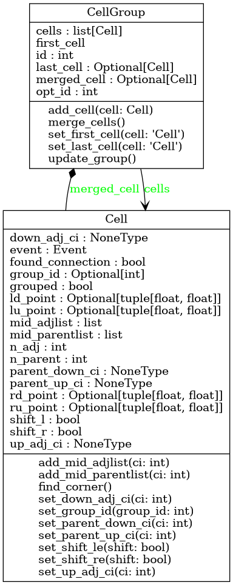
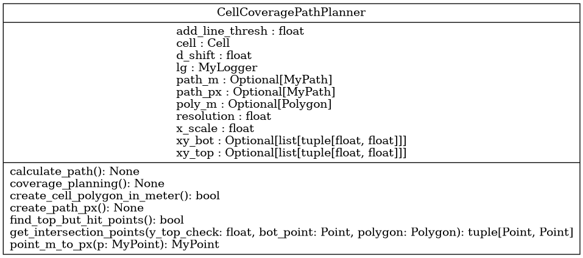
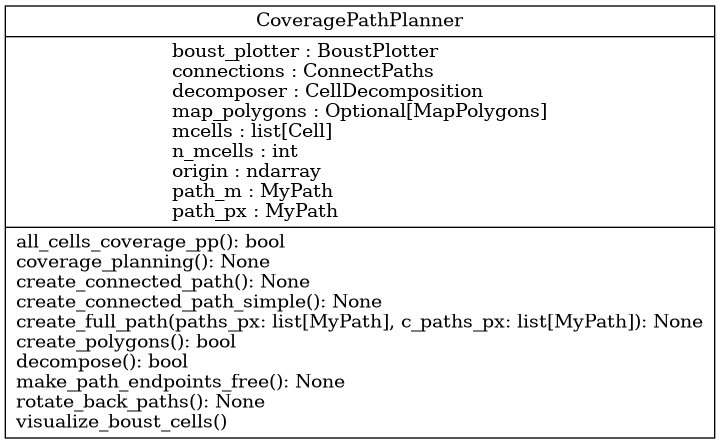
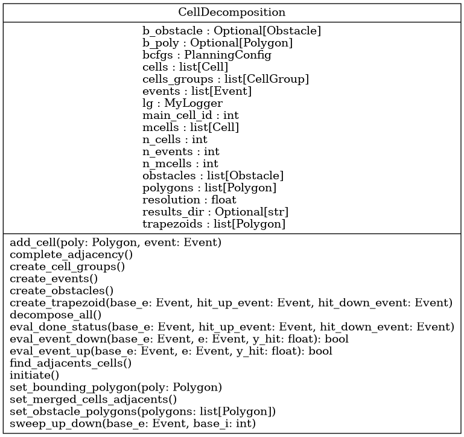
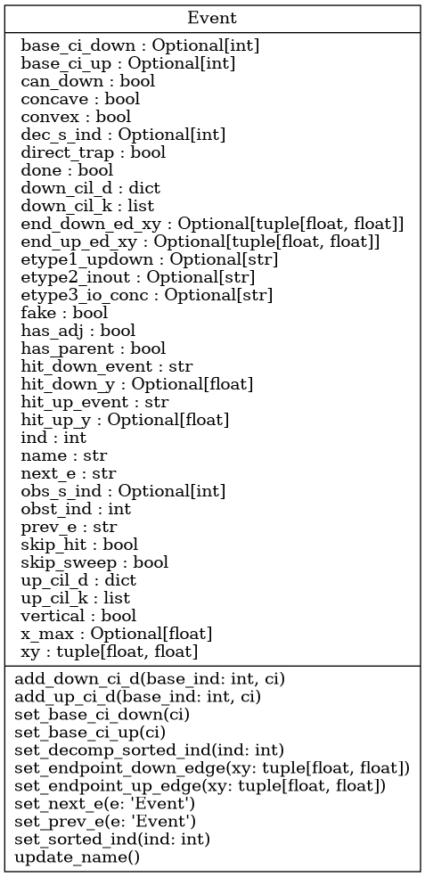
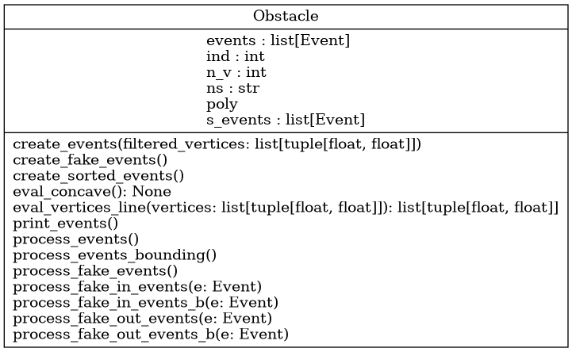
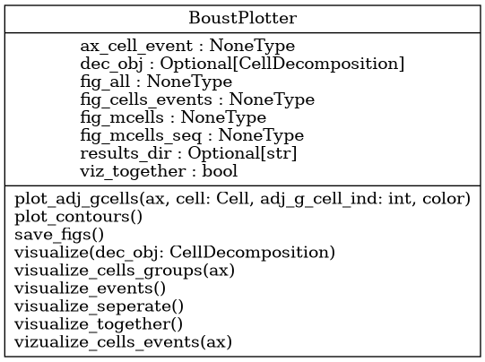
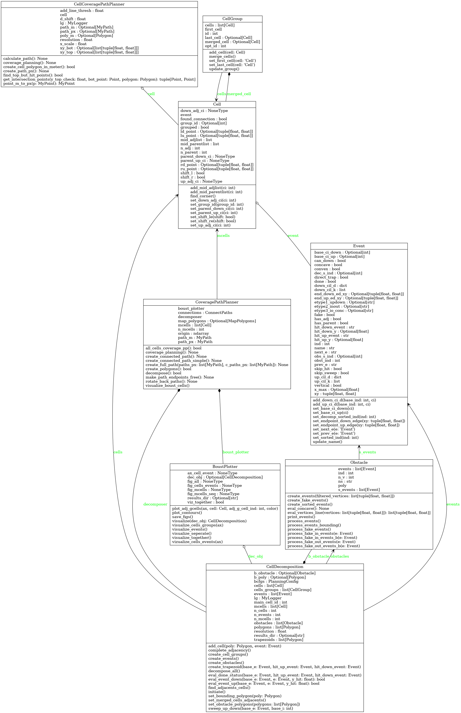

covpp.coverage_planning.boustrophedon
Submodules
covpp.coverage_planning.boustrophedon.cell


covpp.coverage_planning.boustrophedon.cell_cov_planner


covpp.coverage_planning.boustrophedon.coverage_pp_boust


covpp.coverage_planning.boustrophedon.decomposition_bs_mh


covpp.coverage_planning.boustrophedon.events


Event class for decomposition
- class Event(obst_ind: int, ind: int, v: tuple[float, float])
Bases:
objectEvent class for decomposition.
- set_sorted_ind(ind: int)
- set_decomp_sorted_ind(ind: int)
- set_endpoint_up_edge(xy: tuple[float, float])
- set_endpoint_down_edge(xy: tuple[float, float])
- set_base_ci_up(ci)
- set_base_ci_down(ci)
- add_up_ci_d(base_ind: int, ci)
- add_down_ci_d(base_ind: int, ci)
- update_name()
covpp.coverage_planning.boustrophedon.obstacles


obstacles class for decomposition
- class Obstacle(ind: int, poly: shapely.Polygon)
Bases:
objectEncapsulate a polygonal obstacle and its decomposition events.
Each obstacle generates a sequence of sweep-line events that drive the trapezoidal decomposition. The class pre-processes vertices, injects fake events for vertical edges, and evaluates event types (up/down/in/out) used by
CellDecomposition.- create_events(filtered_vertices: list[tuple[float, float]])
- eval_vertices_line(vertices: list[tuple[float, float]]) list[tuple[float, float]]
Remove vertices that are on the same vertical line between two other vertices, then create events.
- create_fake_events()
- create_sorted_events()
- eval_concave() None
- process_events_bounding()
- process_events()
- process_fake_events()
- print_events()
covpp.coverage_planning.boustrophedon.plotter


covpp.coverage_planning.boustrophedon.post_process_mcells
Module contents

